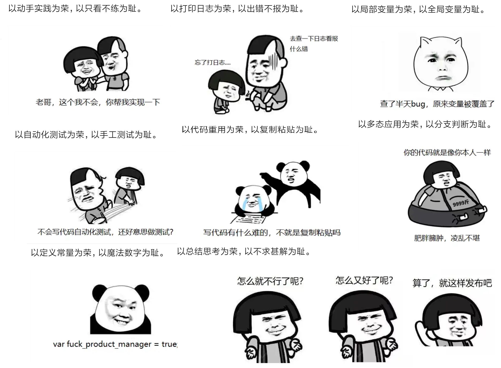

# 分享一下 WPF DataTable 帮助类
# DataTable 导出 CSV
/// <summary> | |
/// DataTable 导出 CSV | |
/// </summary> | |
/// <param name="dt"></param> | |
public void SaveCSV(DataTable dt) | |
{ | |
SaveFileDialog saveFile = new SaveFileDialog(); | |
saveFile.Title = "保存文件"; | |
saveFile.Filter = "CSV文件(*.csv) |*.csv |所有文件(*.*) |*.*"; | |
saveFile.FilterIndex = 1; | |
if (saveFile.ShowDialog() == System.Windows.Forms.DialogResult.OK) | |
{ | |
string fileName = saveFile.FileName; | |
if (File.Exists(fileName)) | |
{ | |
File.Delete(fileName); | |
} | |
FileStream fs = null; | |
StreamWriter sw = null; | |
// 先打印标头 | |
StringBuilder strColu = new StringBuilder(); | |
StringBuilder strValue = new StringBuilder(); | |
int i = 0; | |
try | |
{ | |
fs = new FileStream(fileName, FileMode.Create, FileAccess.Write); | |
sw = new StreamWriter(fs, Encoding.Default); | |
for (i = 0; i <= dt.Columns.Count - 1; i++) | |
{ | |
strColu.Append(dt.Columns[i].ColumnName); | |
strColu.Append(","); | |
} | |
strColu.Remove(strColu.Length - 1, 1);// 移出掉最后一个，字符 | |
sw.WriteLine(strColu); | |
foreach (DataRow dr in dt.Rows) | |
{ | |
strValue.Remove(0, strValue.Length);// 移出 | |
for (i = 0; i <= dt.Columns.Count - 1; i++) | |
{ | |
strValue.Append(ReplaceChar(dr[i] == DBNull.Value ? "" : dr[i].ToString())); | |
strValue.Append(","); | |
} | |
strValue.Remove(strValue.Length - 1, 1);// 移出掉最后一个，字符 | |
sw.WriteLine(strValue.ToString()); | |
} | |
sw.Close(); | |
} | |
catch (Exception ex) | |
{ | |
System.Windows.MessageBox.Show(ex.Message.ToString()); | |
} | |
System.Windows.Forms.MessageBox.Show("保存CSV成功", "提示", MessageBoxButtons.OK, MessageBoxIcon.Information); | |
} | |
} | |
/// <summary> | |
/// 防止串列 | |
/// </summary> | |
/// <param name="str"></param> | |
/// <returns></returns> | |
private string ReplaceChar(string str) | |
{ | |
string field = str; | |
if (field.IndexOf("+") == 0 || field.IndexOf("-") == 0 || field.IndexOf("=") == 0 || field.IndexOf("'") == 0) | |
{ | |
if (IsNum(field)) | |
{ | |
return field; | |
} | |
return string.Format("\t{0}", field); | |
} | |
if (field.IndexOf(',') >= 0) | |
{ | |
return string.Format("\"{0}\"", field); | |
} | |
if (field.IndexOf('"') >= 0) | |
{ | |
return string.Format("\t{0}", field); | |
} | |
if (field.IndexOf('\r') >= 0) | |
{ | |
return string.Format("\"{0}\"", field); | |
} | |
if (field.IndexOf('\n') >= 0) | |
{ | |
return string.Format("\"{0}\"", field); | |
} | |
if (field.IndexOf('\"') >= 0) | |
{ | |
return string.Format("\"{0}\"", field); | |
} | |
if (field != field.Trim()) | |
{ | |
return string.Format("\"{0}\"", field); | |
} | |
return field; | |
} | |
private bool IsNum(object num) | |
{ | |
try | |
{ | |
Convert.ToDecimal(num); | |
return true; | |
} | |
catch | |
{ | |
return false; | |
} | |
} |
# DataTable 转 Excel
/// <summary> | |
/// DataTable 转 Excel | |
/// </summary> | |
/// <param name="m_DataTable"></param> | |
public void DataToExcel(DataTable m_DataTable) | |
{ | |
SaveFileDialog saveFile = new SaveFileDialog(); | |
saveFile.Title = "保存文件"; | |
saveFile.Filter = "EXECL文件(*.xlsx) |*.xlsx |所有文件(*.*) |*.*"; | |
saveFile.FilterIndex = 1; | |
if (saveFile.ShowDialog() == System.Windows.Forms.DialogResult.OK) | |
{ | |
string FileName = saveFile.FileName;// + ".xls"; | |
if (File.Exists(FileName)) | |
{ | |
File.Delete(FileName); | |
} | |
FileStream objFileStream; | |
StreamWriter objStreamWriter; | |
string strLine = ""; | |
objFileStream = new FileStream(FileName, FileMode.OpenOrCreate, FileAccess.Write); | |
objStreamWriter = new StreamWriter(objFileStream, System.Text.Encoding.Unicode); | |
for (int i = 0; i < m_DataTable.Columns.Count; i++) | |
{ | |
strLine = strLine + m_DataTable.Columns[i].Caption.ToString() + Convert.ToChar(9); | |
} | |
objStreamWriter.WriteLine(strLine); | |
strLine = ""; | |
for (int i = 0; i < m_DataTable.Rows.Count; i++) | |
{ | |
for (int j = 0; j < m_DataTable.Columns.Count; j++) | |
{ | |
if (m_DataTable.Rows[i].ItemArray[j] == null) | |
{ | |
strLine = strLine + " " + Convert.ToChar(9); | |
} | |
else | |
{ | |
string rowstr = ""; | |
rowstr = m_DataTable.Rows[i].ItemArray[j].ToString(); | |
if (rowstr.IndexOf("\r\n") > 0) | |
{ | |
rowstr = rowstr.Replace("\r\n", " "); | |
} | |
if (rowstr.IndexOf("\t") > 0) | |
{ | |
rowstr = rowstr.Replace("\t", " "); | |
} | |
strLine = strLine + rowstr + Convert.ToChar(9); | |
} | |
} | |
objStreamWriter.WriteLine(strLine); | |
strLine = ""; | |
} | |
objStreamWriter.Close(); | |
objFileStream.Close(); | |
System.Windows.Forms.MessageBox.Show("保存EXCEL成功", "提示", MessageBoxButtons.OK, MessageBoxIcon.Information); | |
} | |
} |
